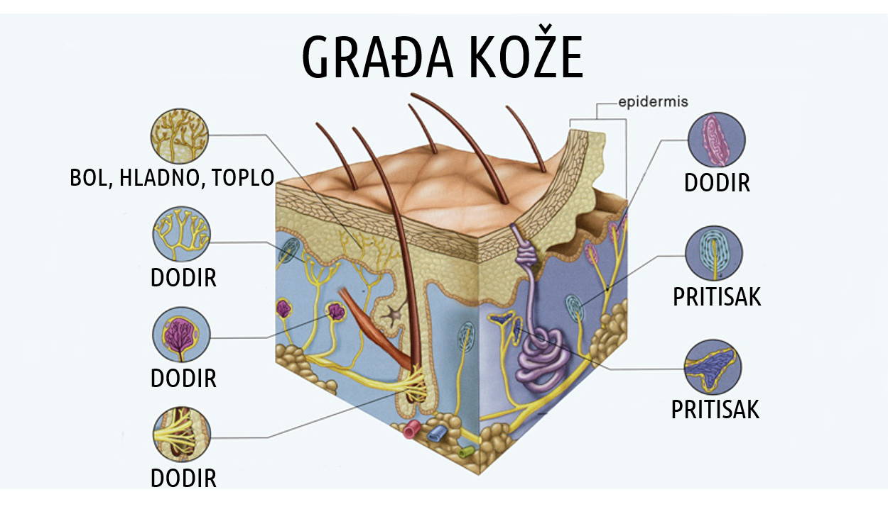

U krznu se nalaze i brojna čulna tjelašca i nervni završeci; to su receptori za dodir, pritisak, toplo, hladno i bol.
Receptori za dodir nalaze se ispod same pokožice. To su tjelašca sastavljena od čulnih ćelija, između kojih se nalaze nervni završeci. Na mjestu dodira koža se ugiba, čulne ćelije pritiskaju nervne završetke i draže ih. Tjelašca za dodir nijesu ravnomjerno raspoređena po tijelu. Najviše ih ima na jagodicama prstiju i usnama, najmanje ih je na leđima.
Receptori za toplo i hladno primaju informacije koje su važne za održavanje tjelesne temperature. Receptori za toplo smješteni su dublje u koži; najviše ih je na usnama i obrazima. Receptori za hladno smješteni su u gornjim slojevima krzna, blizu pokožice. Najgušće su raspoređeni oko pojasa, na leđima i na grudima. Obavještenja koja tijelo dobija iz ovih čulnih organa prenose se do centara vegetativnog nervnog sistema, koji učestvuju u regulaciji tjelesne temperature.
Receptori za bol su nervni završeci; raspoređeni su svuda u koži, a ima ih i u unutrašnjim organima. Osjetljivi su na različite vrste draži: mehaničke, hemijske, toplotne. Tako bol mogu izazvati ubodi, jake kiseline, visoka ili niska temperatura, djelovanje bakterija... Broj receptora za bol daleko premašuje broj ostalih receptora u koži. Zašto? Bol je neprijatna pojava, ali uvijek ima biološko opravdanje. Upozorava nas na bolest, povredu ili na neku drugu opasnost.
